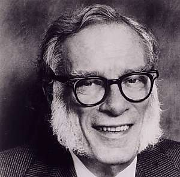

Борис Акунин
Мой календарь
Раскрепостившись и освободившись в первый день января, второй день следует посвятить мечтам и планам на новый год, пусть даже самым фантастическим.
Дата для этого идеальная: сегодня отмечается День Фантастики, приуроченный к дню рождения Айзека Азимова.
Исаак Иудович - наш соотечественник, он родился в 1920 году в Смоленской губернии, у очень умных родителей. Они не дали ребенку стать пионером и комсомольцем, а впоследствии колхозником, да хоть бы даже и членом советского Союза Писателей, который сочинял бы фантастические романы про коммунистическое будущее. Мальчика увезли в Бруклин и вырастили американцем.
Он был клаустрофил. Любил забиться в маленькое, тесное помещение и там, в уюте и безопасности, мечтать об огромных мирах.
Но Азимов не только мечтал о них, он их еще и создавал.
Советую так же провести этот день и вам. Остаться дома, в четырех стенах, и строить большие планы.
У кого большие планы, тот многого и достигает. Как Азимов.
Лично я очень стараюсь ему подражать. У Азимова есть повесть «Азазель» - у меня тоже. Понимая, что будущим владеет тот, кто хорошо знает прошлое, Азимов выпустил серию трактатов в жанре поп-истории («Создание Англии», «Создание Франции», «Темные века» и так далее) - я последовал и этому примеру. Пару фантастических книжек из уважения к классику я тоже написал, а как же.
Пятьсот книг, как он, мне, конечно, не выпустить, но я очень стараюсь.
Будьте и вы, как Азимов, хотя бы сегодня. Не нужно оставаться фантастом весь год, иначе оторвешься от земли, улетишь в космос и растворишься в безвоздушном пространстве, но 2 января можно и полетать.
Закончу лимериком, потому что Айзек, помимо всего прочего, выпустил еще и несколько сборников этих англо-саксонских частушек.